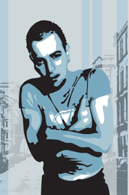
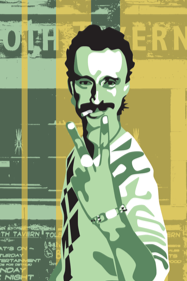
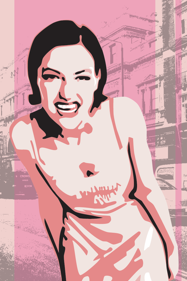
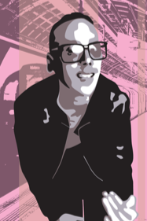

Trainspotting Redux
Trainspotting is a British indie film that influenced pop culture in the 90s. This movie heavily influenced me for it’s raw combination of visuals and music in storytelling. This piece is an homage to the colorful main characters of that movie set in various locations of Scotland.
11x17 Digital print on wood panel



